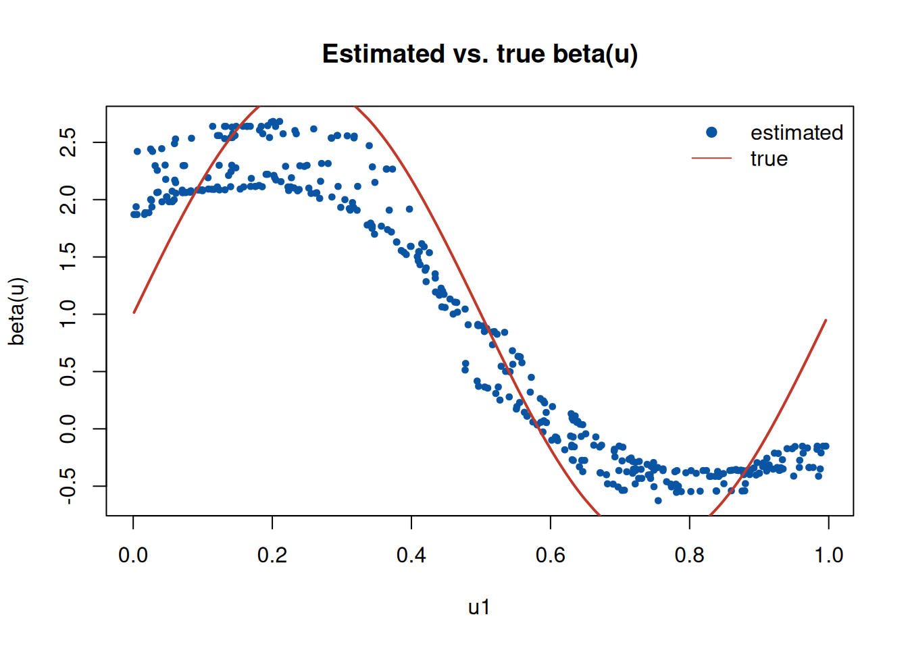

第 8 部分线性地理加权分位回归模型
地理加权回归（GWR, Fotheringham, Brunsdon & Charlton 1996 (Fotheringham et al. 1996)）让回归系数随空间位置变化，但若 某些协变量的效应实际上在全局保持不变，逐点估计会损失效率、放大 方差。部分线性模型把协变量分成两组：一组的效应随位置变化，另一组 的效应为全局常数。部分线性地理加权分位回归（PLGWR 分位回归， 侯健, 刘硕 & 田茂再 2026 (侯健 et al. 2026)）把这一结构置于分位回归 框架下：以地理加权核估计局部系数，以分位损失提供对重尾误差与离群 值的稳健性。本章展开模型的数学准备、剖面估计的推导与数值实现。
8.1 数学准备
8.1.1 模型设定
设样本 \((y_i, x_i, z_i, u_i)\)，\(i = 1, \dots, n\)，其中 \(u_i\) 为空间 位置。部分线性地理加权分位回归模型为
\[ y_i = z_i^\top \gamma + x_i^\top \beta(u_i) + \varepsilon_i, \qquad Q_\tau(\varepsilon_i \mid x_i, z_i, u_i) = 0, \]
其中 \(\gamma\) 为全局常数系数，\(\beta(\cdot)\) 为随位置变化的系数 函数，\(\varepsilon_i\) 的 \(\tau\) 分位为零。模型把协变量 \(z\) 的效应 （全局平稳）与 \(x\) 的效应（局部变化）分开：前者由全体样本共享 信息，后者只由位置邻近的样本决定。
8.1.2 分位损失与地理加权
分位回归最小化 Check 损失（Koenker 2001 (Koenker 2001)）
\[ \rho_\tau(r) = r\bigl(\tau - \mathbf 1\{r < 0\}\bigr), \]
其不对称性使估计对重尾误差与离群值稳健。地理加权的思想是用核权重 \(w_{ij} = K_h(\|u_i - u_j\|)\) 强调位置邻近的样本：在位置 \(u_i\) 处， \(w_{ij}\) 大者贡献大。两部分结合，位置 \(u_i\) 处的局部系数估计为 加权分位回归：
\[ \hat\beta(u_i) = \arg\min_b \sum_{j=1}^{n} w_{ij}\, \rho_\tau\bigl(y_j - z_j^\top \gamma - x_j^\top b\bigr). \]
8.1.3 窗宽与偏差-方差权衡
核权重 \(w_{ij} = \exp(-\|u_i - u_j\|^2 / h^2)\) 的窗宽 \(h\) 控制局部 性：\(h\) 小则局部偏差小、方差大；\(h\) 大则反之（与第 7 章 同窗宽设定的讨论一致）。对分位损失，窗宽的选择以预测 Check 损失的 交叉验证为准。
8.2 详细推导
8.2.1 剖面估计
联合目标
\[ \sum_{i=1}^{n}\sum_{j=1}^{n} w_{ij}\, \rho_\tau\bigl(y_j - z_j^\top \gamma - x_j^\top \beta(u_i)\bigr) \]
中 \(\gamma\) 与 \(\beta(\cdot)\) 耦合，直接最小化不可行。剖面估计交替 更新两个部分，是块坐标下降的一种实现：
第 1 步（局部系数）。 固定 \(\gamma\)，对每个位置 \(u_i\) 解
\[ \hat\beta(u_i; \gamma) = \arg\min_b \sum_j w_{ij}\, \rho_\tau\bigl(y_j - z_j^\top \gamma - x_j^\top b\bigr), \]
即一次带核权重的分位回归；各位置的解彼此独立，可并行计算。
第 2 步（全局系数）。 固定 \(\hat\beta(\cdot; \gamma)\)，解
\[ \hat\gamma = \arg\min_g \sum_i \rho_\tau\bigl(y_i - z_i^\top g - x_i^\top \hat\beta(u_i; \gamma)\bigr), \]
即对残差 \(y_i - x_i^\top \hat\beta(u_i)\) 做一次普通分位回归。
两步交替迭代至 \(\hat\gamma\) 收敛；初值取全局最小二乘估计。目标 函数对 \((\gamma, \beta(\cdot))\) 联合凸，各子问题均为凸优化，实践中 数轮即收敛。
8.2.2 与两步法的关系
第 6 章的两步法同样先估计变系数部分、再从残差中估计 固定系数。差别在于：MGTWR 的变系数部分以加权最小二乘实现，本章 以分位损失实现——前者对均值结构敏感，后者追踪的是条件分位。当 误差重尾或含离群值时，两者的估计目标不同，分位版本更稳健。
8.3 实现与计算
- 逐点局部拟合：\(x\) 的维数低时（\(p \le 3\)），每个位置的加权
分位回归用拟牛顿法（
optim）即可；维数高时建议用线性规划求解 器。 - 窗宽选择：对 \(h\) 做网格搜索，以留一法或 \(K\) 折交叉验证的 预测 Check 损失为准；候选网格取位置距离的分位数，与第 7 章的搜索策略一致。
- 收敛判据：以 \(\|\hat\gamma^{(t+1)} - \hat\gamma^{(t)}\| < 10^{-5}\) 为停止准则，并限制最大迭代次数防止振荡。
- 局部截距：\(x\) 中应包含常数列以吸收位置水平；分位回归的 截距随 \(\tau\) 变化，携带分布位置信息，与全局系数 \(\gamma\) 的 识别互不干扰。
8.4 数值例
例：部分线性结构同时识别全局与局部效应。 生成 \(n = 400\) 个 位置样本：\(x\) 的系数 \(\beta(u) = 1 + 2\sin(2\pi u_1)\) 随空间变化， \(z\) 的系数 \(\gamma = 1.5\) 为全局常数，误差为 \(N(0, 0.4^2)\)。用剖面 迭代估计两个部分，并与”把 \(\beta\) 误设为常数”的全局拟合比较。
rho <- function(u, tau) u * (tau - (u < 0))
set.seed(2026)
n <- 400
u <- cbind(runif(n), runif(n)) # 空间位置
x <- rnorm(n); z <- rnorm(n) # 局部与全局协变量
b_true <- 1 + 2 * sin(2 * pi * u[, 1]) # 空间变系数
g_true <- 1.5
tau <- 0.5
y <- b_true * x + g_true * z + rnorm(n, sd = 0.4)
h <- 0.25
wfun <- function(u0) exp(-rowSums(sweep(u, 2, u0)^2) / h^2)
plgwqr_fit <- function(y, x, z, u, h, tau, itermax = 5) {
n <- length(y)
gamma <- coef(lm(y ~ z))[2] # 初值：全局最小二乘
for (iter in 1:itermax) {
beta_hat <- sapply(1:n, function(i) { # ① 逐点局部加权分位回归
w <- wfun(u[i, ])
obj <- function(par) sum(w * rho(y - par[1] - par[2] * x - gamma * z, tau))
optim(c(quantile(y - gamma * z, tau), 0), obj, method = "BFGS")$par
})
objg <- function(g) # ② 残差的全局分位回归
sum(rho(y - beta_hat[1, ] - beta_hat[2, ] * x - g * z, tau))
gamma_new <- optimize(objg, c(-5, 5))$minimum
if (abs(gamma_new - gamma) < 1e-6) { gamma <- gamma_new; break }
gamma <- gamma_new
}
list(gamma = gamma, beta_hat = beta_hat)
}
fit <- plgwqr_fit(y, x, z, u, h, tau)
b_rmse <- sqrt(mean((fit$beta_hat[2, ] - b_true)^2))
c_rmse <- sqrt(mean((mean(b_true) - b_true)^2))
cat("gamma hat:", round(fit$gamma, 3), " (true", g_true, ")\n")## gamma hat: 1.491 (true 1.5 )## beta(u) RMSE: 0.535 | constant-fit RMSE: 1.411
图 8.1: 局部系数估计与真值（按空间坐标排序）
全局系数 \(\hat\gamma = 1.491\) 与真值 \(1.5\) 几乎重合；局部系数的估计 RMSE 为 \(0.535\)，远小于把 \(\beta\) 误设为常数时的拟合误差 \(1.411\) （即 \(\beta(u)\) 自身关于均值的标准差）。图中估计值沿空间坐标跟踪 真值曲线：部分线性结构同时恢复了全局常数部分与局部变化部分。需要 说明的是，\(\beta(u)\) 的 RMSE 包含核光滑的方差成分，随样本量增大与 窗宽减小而下降。
8.5 注记
- 部分线性模型的剖面估计思想见 Engle et al. (1986) 与 Speckman (1988)；把剖面估计用于地理加权设定后，全局系数与局部系数可分离 估计。
- 地理加权回归的核、窗宽与推断见 Fotheringham, Brunsdon & Charlton (2002), Geographically Weighted Regression。
- 分位回归的稳健性与推断见 Koenker (2005) (Koenker 2001)。
- 模型设定、估计算法与实证分析见侯健, 刘硕 & 田茂再 (2026) (侯健 et al. 2026)，网络首发于《应用数学学报》， https://doi.org/10.20142/j.cnki.amas.202600069。